"Un Sistema de Clasificación Probabilística para Predecir los Sitios de Localización Celular de Proteínas", Paul Horton y Kenta Nakai, Sistemas Inteligentes en Biología Molecular, 109-115. St. Louis, EE. UU. 1996.
El estudio es realizado en el marco del proceso CRISP-DM:
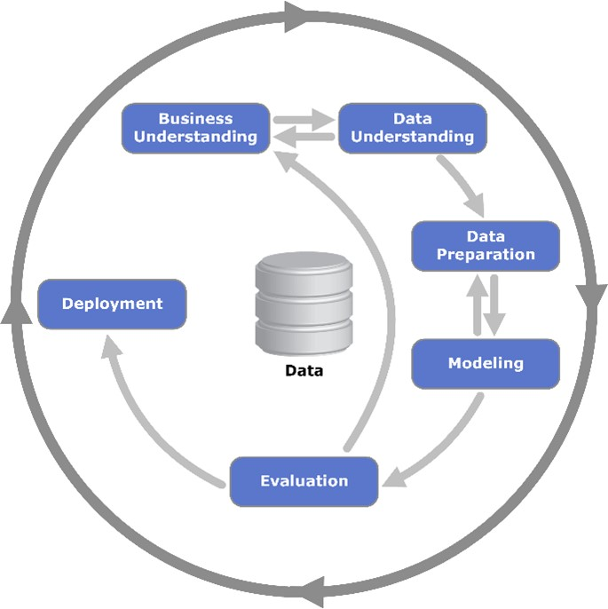El objetivo principal es analizar y predecir la localización de las proteínas de Escherichia coli (E.Coli) en células bacterianas. Este dataset contiene diversas características que representan propiedades fisicoquímicas de las proteínas, con el fin de desarrollar modelos que puedan identificar la localización subcelular de dichas proteínas.
El dataset contiene 336 registros, cada uno de ellos con 8 atributos y una clase predictora. Los atributos son:
Un dato no menor de este dataset es que no contiene valores nulos o faltantes, lo que vuelve el caso de estudio y los resultados más realistas.
En cuanto a sus atributos son en su gran mayoría del tipo numérico a excepción del nombre de la secuencia y de la Clase predictora.
La clase predictora es la localización de la proteína, la cual puede ser:
| NOMBRE ATRIBUTO | DESCRIPCIÓN | CANTIDAD | TIPO DE DATOS | FALTANTES | ROL |
|---|---|---|---|---|---|
| SequenceName | Nombre de la secuencia | 336 | Polinomial | no | regular |
| cp (citoplasma) | Citoplasma | 143 | Entero | no | regular |
| im | Membrana interna sin secuencia de señal | 77 | Entero | no | regular |
| pp | Periplasma | 52 | Entero | no | regular |
| imU | Membrana interna, secuencia de señal no clivada | 35 | Entero | no | regular |
| om | Membrana externa | 20 | Entero | no | regular |
| omL | Membrana externa lipoproteica | 5 | Entero | no | regular |
| imL | Membrana interna lipoproteica | 2 | Entero | no | regular |
| imS | Membrana interna, secuencia de señal clivada | 2 | Entero | no | regular |
El conjunto de datos está orientado a la predicción de la localización subcelular de proteínas de E.Coli. Los atributos representan diversos métodos de puntuación y análisis de secuencias de proteínas, mientras que la variable objetivo son las diferentes localizaciones subcelulares.
Como se puede apreciar en la tabla anterior las Estadísticas de los datos mostrados por Rapidminer, indican que los datos no tienen valores nulos o faltantes, así como también los minimos y máximos de los atributos, junto con su media.
A fin de comprender mejor como es que se comportan los datos tenemos la opción de poder visualizarlos en un gráfico de barras, en el cual podemos ver como se comportan los datos en cada uno de los atributos.
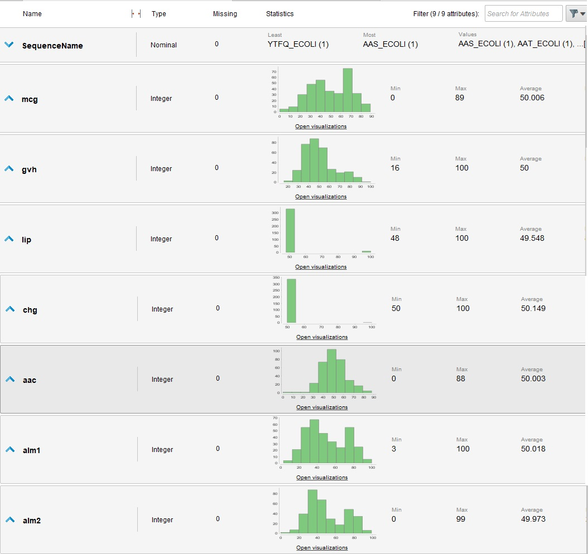A continuación se reflejaran los comportamientos de los atributos más importantes para determinar la localización de las proteínas de E.Coli, en función de la clase objetivo.
En el gráfico anterior se puede apreciar que el atributo mcg tiene un comportamiento un tanto variable, ya que la distinción ofrecida por la clase objetivo nos indica que a pesar de encontrar un rango especifico en cual acotar las fluctuaciones de los datos, estos se encuentran muy dispersos, por lo que no se puede determinar una tendencia clara.
Los valores de gvh presentan un comportamiento similar al atributo mcg, ya que a pesar de que se puede apreciar una tendencia de comportamiento para los valores de la clase objetivo, estos se encuentran muy dispersos, pero a diferencia del atributo mcg, los valores de gvh se encuentran más acotados.
Al analizar el gráfico anterior se aprecian como este atributo presenta un comportamiento más acotado, ya que los valores de la clase objetivo se encuentran en un rango más reducido. Lo que nos indica que este atributo es más determinante para la predicción de la clase objetivo, esto es de gran importancia teniendo en cuenta que el objetivo es buscar la clasificación de las proteínas de E.Coli.
Utilizando un subproceso denominado "Data Preparation" en RapidMiner, se realizaron las tareas de acondicionamiento del dataset. El dataset no presenta valores nulos o faltantes, por lo que no es necesario realizar una limpieza de datos. Lo que si es necesario hacer es acotar aquellos valores que se encuentran fuera de rango, para ello se utilizó el operador "Filter Examples" de Rapidminer, el cual nos permite acotar los valores de los atributos que se encuentran fuera de rango después de utilizar el operador "Detect Outliers".
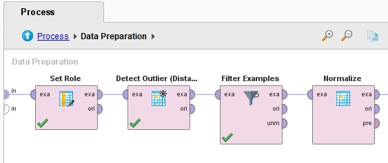También es preciso indicar cual es el atributo que se desea predecir, para ello se utilizó el operador "Set Role" de Rapidminer, el cual nos permite indicar cual es el atributo que se desea predecir, en este caso LSOP (Localización de los Sitios de Proteína, del inglés Localization Sites Of Proteins).
Otra de las tareas que se realiza para la preparación de los datos es la normalización de los mismos, para ello se utilizó el operador "Normalize" de Rapidminer, el cual nos permite normalizar los datos de los atributos, para que estos se encuentren en un rango de 0 a 1.
Finalmente se utilizó el operador "Attribute Weights (Weight by Gini Index)" de Rapidminer, el cual nos permite asignar un peso a cada uno de los atributos, en función de su importancia para la predicción de la clase objetivo. El resultado de este operador se puede apreciar en la siguiente gráfica:
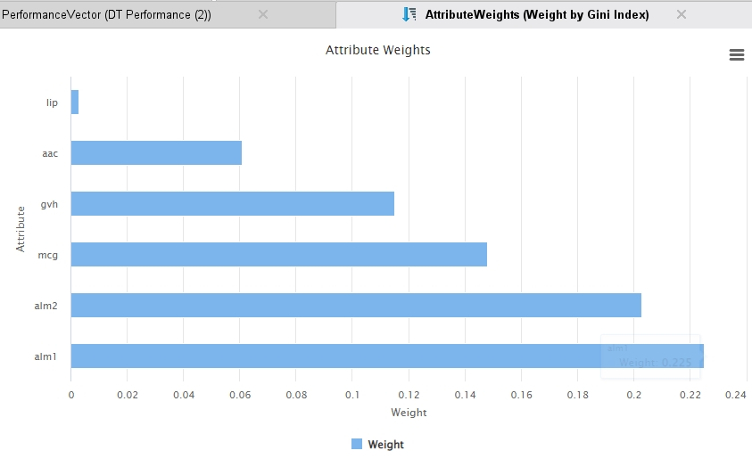El problema que presenta el data set es de clasificación, ya que se busca predecir la localización de las proteínas de E.Coli, por lo que se utilizaron los algoritmos de clasificación que se vieron en el curso de Inteligencia Artificial, los cuales son:
Para cada uno de los algoritmos se utilizó el operador "Cross Validation" de Rapidminer, el cual nos permite realizar una validación cruzada de los datos, para así poder obtener una mejor precisión de los resultados. Las configuraciones utilizada en el operador "Cross Validation" fueron las siguientes: - Número de folds: 10 - Sampling Type: Stratified Sampling - Local random seed: 1992
A continuación se procederá a explicar el funcionamiento de cada uno de los algoritmos utilizados, así como también se explicará el funcionamiento de los operadores utilizados para cada uno de ellos.
El algoritmo de Naive Bayes es un algoritmo de clasificación que se basa en el teorema de Bayes, el cual establece que la probabilidad de que ocurra un evento A, dado que ha ocurrido un evento B, es igual a la probabilidad de que ocurra el evento B, dado que ha ocurrido el evento A, multiplicado por la probabilidad de que ocurra el evento A, dividido por la probabilidad de que ocurra el evento B.
Como ya se mencionó anteriormente, el modelado de este algoritmo se realizó en un "Corss Validation",como se puede apreciar en la imagen inferior:
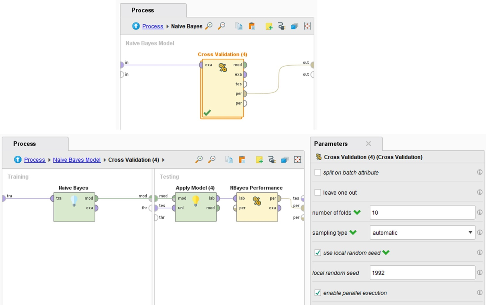Ahora bien, el unico ajuste realizado fue colocar un check en el "laplace correction" del operador, y para poder conocer más en detalle los resultados obtenidos por el algoritmo, se utilizó el operador "Performance (Classification)", el cual nos permite obtener la precisión. Los resultados son presentados en la siguiente tabla:
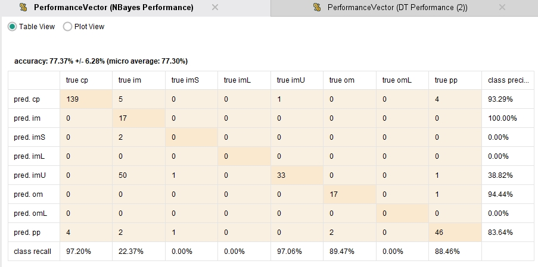Como se puede apreciar no es posible predecir las clases "imL", "imS" y "omL", ya que que el porcentaje de precisión es igual a 0. Esto se debe a que no se cuenta con suficientes datos para poder predecir dichas clases.
El algoritmo de Árbol de Decisión es un algoritmo de clasificación que se basa en la creación de un árbol de decisión, el cual se va creando a partir de los atributos que se encuentran en el dataset, para así poder predecir la clase objetivo.
La configuración del operador "Decision Tree" se realizó de la siguiente manera:
Como ya se mencionó anteriormente, el modelado de este algoritmo se realizó en un "Cross Validation", así como también el operador "Optimize Parameters (Grid)", el cual nos permite optimizar los parámetros del algoritmo.
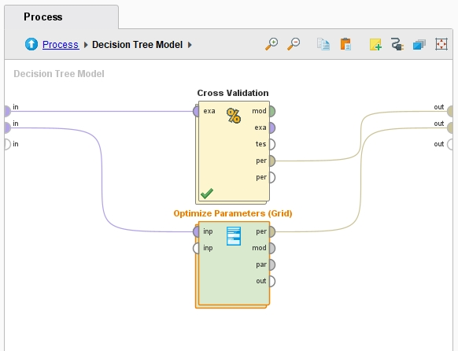El operador "Optimize Parameters (Grid)" se configuro con los siguientes parámetros:
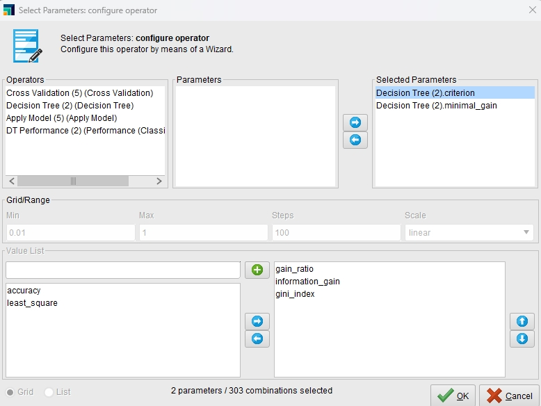 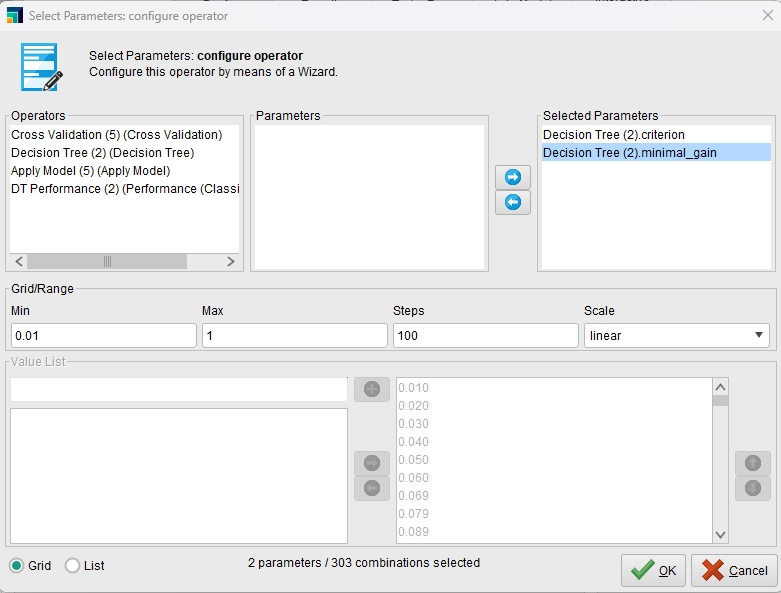Ahora bien, para poder conocer más en detalle los resultados obtenidos por el algoritmo, se utilizó el operador "Performance (Classification)", el cual como ya vimos nos permite obtener la precisión. Los resultados son presentados en las siguientes tablas (una para el árbol de decisión y otra para el árbol de decisión optimizado):
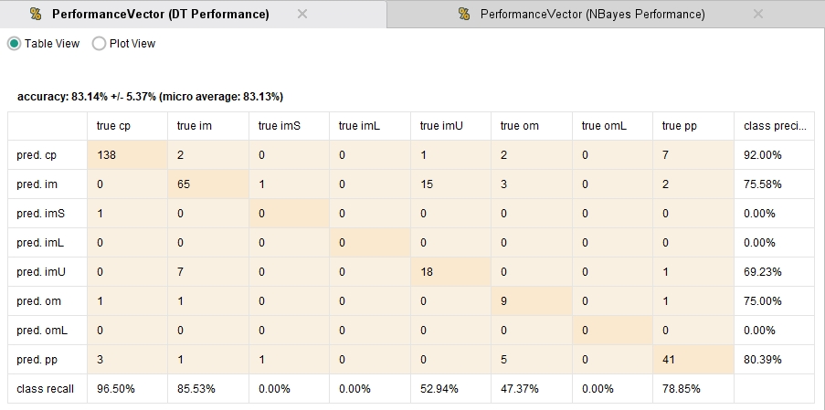 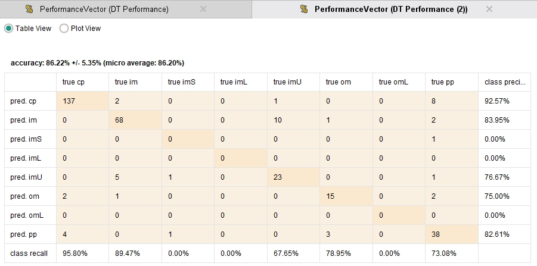Como se puede apreciar en las tablas anteriores, el árbol de decisión optimizado obtuvo mejores resultados que el árbol de decisión, ya que la precisión del árbol de decisión optimizado es de 86.22%, mientras que la precisión del árbol de decisión es de 83.14%.
El algoritmo de K-NN es un algoritmo de clasificación que se basa en la cercanía de los datos, para así poder predecir la clase objetivo. Este algoritmo se basa en la distancia euclidiana, la cual nos permite conocer la distancia entre dos puntos.
La configuración del operador "K-NN" se realizó de la siguiente manera:
Como ya se mencionó anteriormente, el modelado de este algoritmo se realizó en un "Cross Validation", lo cual nos permite realizar una validación cruzada de los datos, para así poder obtener una mejor precisión de los resultados.
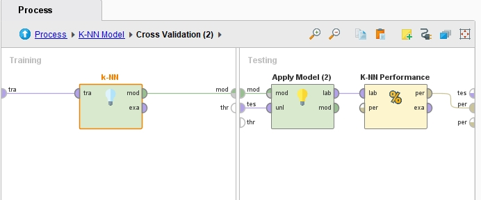Siguiendo el mismo procedimiento que con los algoritmos anteriores, se utilizó el operador "Performance (Classification)". Los resultados son presentados en la siguiente tabla:
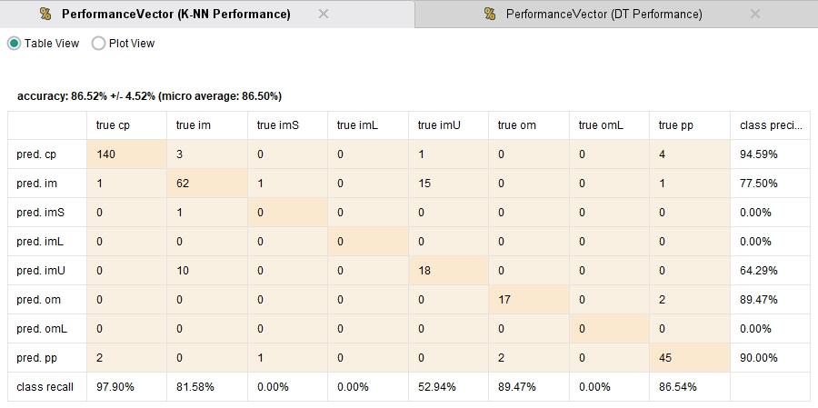Como se puede apreciar en la tabla anterior, el algoritmo de K-NN obtuvo una precisión de 86.52%, lo cual es un resultado bastante bueno, ya que es el segundo mejor resultado obtenido. Y el error de aproximación es de +/- 4.52%, lo cual es un resultado bastante bueno, ya que es el segundo mejor resultado obtenido.
El algoritmo de Regresión Logística es un algoritmo de clasificación que se basa en la regresión logística, la cual nos permite conocer la probabilidad de que ocurra un evento, en función de una o más variables independientes.
La configuración del operador "Logistic Regression" se realizó de la siguiente manera:
Como ya se mencionó anteriormente, el modelado de este algoritmo se realizó en un "Cross Validation", lo cual nos permite realizar una validación cruzada de los datos, para así poder obtener una mejor precisión de los resultados.
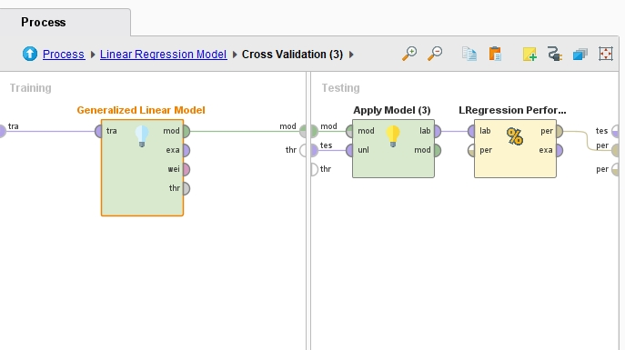Siguiendo el mismo procedimiento que con los algoritmos anteriores, se utilizó el operador "Performance (Classification)". Los resultados son presentados en la siguiente tabla:
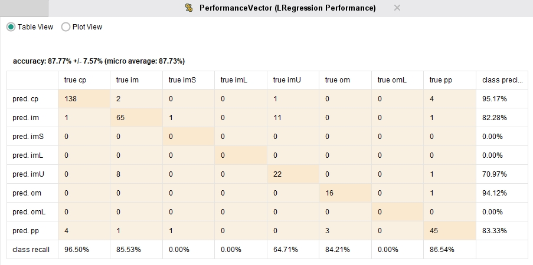Como se puede apreciar en la tabla anterior, el algoritmo de Regresión Logística obtuvo una precisión de 87.77%, lo cual es el mejor resultado obtenido. Y el error de aproximación es de +/- 7.57%, el cual es el peor resultado obtenido.
Para cada uno de los algoritmos se utilizó el operador "Performance (Classification)" de Rapidminer, el cual nos permite obtener la precisión de los resultados obtenidos por cada uno de los algoritmos, estableciendo que su criterio principal de evaluación sea la precisión.
Los resultados obtenidos por cada uno de los algoritmos se pueden apreciar en la siguiente tabla:
| Algoritmo | Precisión | Error de aproximación |
|---|---|---|
| Naive Bayes | 77.37% | +/- 6.28% |
| Árbol de Decisión | 83.14% | +/- 5.37% |
| Árbol de Decisión (Optimizado) | 86.22% | +/- 5.35% |
| K-NN | 86.52% | +/- 4.52% |
| Regresión Logística | 87.77% | +/- 7.57% |
Como se puede apreciar en la tabla anterior, el algoritmo que obtuvo mejores resultados fue el de Regresión Logística, con una precisión de 87.77% y un error de aproximación de +/- 7.57%. Sin embargo, el algoritmo que obtuvo mejores resultados en cuanto a precisión y error de aproximación fue el de K-NN, con una precisión de 86.52% y un error de aproximación de +/- 4.52%.
El objetivo principal de este caso de estudio es analizar y predecir la localización de las proteínas de Escherichia coli (E.Coli), una de las bacterias más comunes en el intestino de personas y animales sanos. Para ello se utilizó un dataset que contiene diversas características que representan propiedades fisicoquímicas de las proteínas, con el fin de desarrollar modelos que puedan identificar la localización subcelular de dichas proteínas.
El estudio se realizó en el marco del proceso CRISP-DM, el cual nos permite realizar un estudio de minería de datos, el cual se divide en 6 fases, las cuales vimos a lo largo del caso de estudio.
En cuanto a los resultados obtenidos, se puede concluir que el algoritmo que obtuvo mejores resultados fue el de Regresión Logística, con una precisión de 87.77% y un error de aproximación de +/- 7.57%. Sin embargo, el algoritmo que obtuvo mejores resultados en cuanto a precisión y error de aproximación fue el de K-NN, con una precisión de 86.52% y un error de aproximación de +/- 4.52%.
Finalmente, se puede concluir que el objetivo principal del caso de estudio se cumplió, ya que se logró analizar y predecir la localización de las proteínas de Escherichia coli (E.Coli), una de las bacterias más comunes en el intestino de personas y animales sanos.